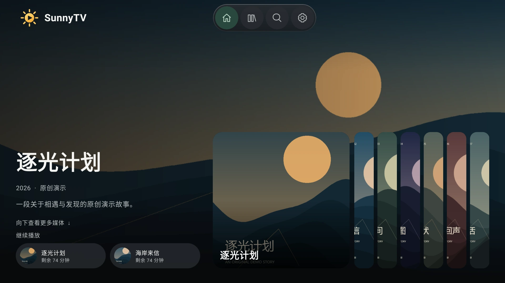
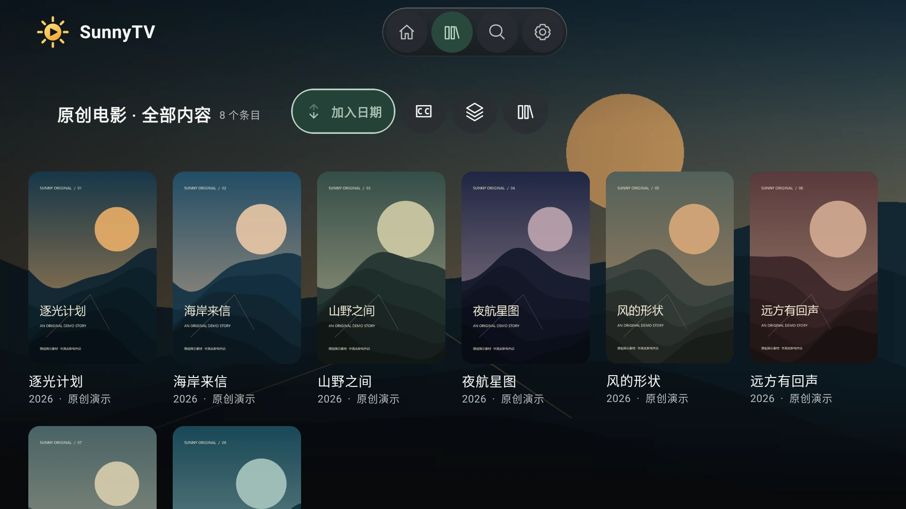
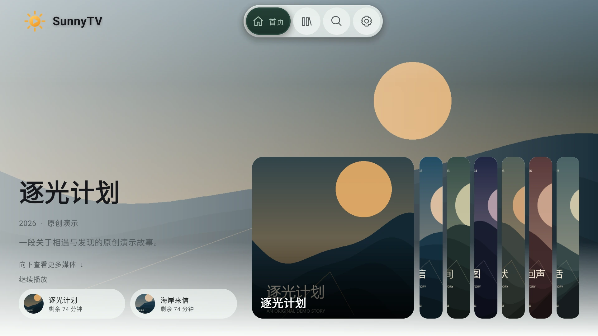

更完整的玻璃外观
液态玻璃、极光与雾面，配合深浅色、重点色和遥控器焦点。
YOUR LIBRARY. YOUR CINEMA.
为自己的媒体库，留一块好屏幕。
从今晚想看的那一部，开始。
ANDROID TV · 手机 · 平板 免费开源 / GPL-3.0

WHAT’S NEW IN 1.0.0
这次正式版整合外观与播放修订，并把灯带控制带到日常观影中。
液态玻璃、极光与雾面，配合深浅色、重点色和遥控器焦点。
详情重复数据容错，原生视频层与画面比例恢复，保留字幕和云端清晰度功能。
视频四边取色、固定色、四角校准与退出熄灯，覆盖升级保留已有设置。
SunnyTV 与 MediaIndex 的图标、介绍和 GitHub 入口各就其位；液态玻璃继续随主项目开源。
MADE FOR THE BIG SCREEN
打开熟悉的收藏，接着上次的进度。
海报、简介和播放入口各就其位，
遥控器的每一次按下，都有清楚的落点。
首页、媒体库与详情各有自己的节奏。优先使用媒体服务已有的海报、背景和片名标志，让收藏保持原本的样子。
电视使用完整的遥控器焦点导航；手机和平板支持触摸与播放手势。播放比例和字幕设置按习惯调整。
启动快照、图片缓存与低负载模式减少等待。界面按设备能力选择合适的效果，把资源留给播放。

LIGHT, WITH A LITTLE DEPTH
清透的液态玻璃、柔和的极光与克制的雾面。
深浅主题与重点色独立调整，让界面贴近你的观看习惯。

界面与字幕可分别选择系统字体，或导入自己的 TTF / OTF / TTC 文件。
字体只保存在设备上，字幕大小、描边与位置也能单独设置。
BRING YOUR COLLECTION
连接自己的 Emby、绿联影视中心，
也保留 CloudDrive2 WebDAV 与 STRM 播放兼容。
独立的添加入口与配置说明，支持媒体库浏览、影片详情和本地列表排序。使用影视中心的 Emby 兼容接口，无需把网页嵌进应用。
使用服务页面显示的地址与端口，远程访问填写有效的 HTTPS 入口。不同固件的菜单位置可能不同。
服务兼容能力随版本而异，部分 Emby 管理操作在绿联服务中不可用。
PRESS PLAY. STAY IN THE STORY.
原生播放器，让画面与操作各得其所。
从取流到字幕，照顾真实媒体库里的细节。
原画直放优先。配合有效的 MediaIndex 播放入口，可切换 115 已生成的云端清晰度，无需 NAS 重新编码。
支持 HTTP(S) STRM、签名地址与受限重定向。直连失败时，可尝试由 Emby 服务端读取。
字幕与音轨按需选择，画面比例可切换并恢复。播放表现取决于设备解码能力、媒体格式与网络。
A LITTLE BEYOND THE SCREEN
1.0.0 加入 SP658E 灯带控制。
取屏幕四边的色彩，给自己的观影角落多一点光。
支持视频取色、固定色、亮度和帧率调整，也能定位末端与四角。离开应用后发送熄灯命令，原有校准设置在覆盖升级后保留。
适用于 SP658E / V4023.21 / SPI RGB，默认关闭，需连接兼容的蓝牙控制器并授予权限。实体灯带的效果与延迟需结合设备实测。
把媒体整理妥当，让播放触手可及。
作者维护的自托管媒体整理项目。通过媒体发现、网盘转存、STRM 生成与 Emby 同步，把分散的资源整理成自己的媒体库。
与 SunnyTV 配合，可从保留授权的 MediaIndex 播放入口观看原画，并使用 115 已生成的清晰度。仅有最终 CDN 直链时，无法据此恢复云端档位。
SUNNYTV 1.0.0
安装 SunnyTV，连接自己的媒体服务。
下载始终前往 GitHub Latest · 1.0.0 / 构建 73 · 安装由 Android 系统确认
不内置影视内容。你需要连接自己的媒体服务，并拥有相应访问权限。官网截图中的影片、海报和故事均为原创演示素材。
界面会根据 Android 版本、硬件加速与性能模式选择可用效果。部分高开销材质需要在外观设置中开启；不支持时自动回退到可用材质。
整合液态玻璃及深浅色外观、详情重复数据容错与原生视频层修复，加入 SP658E 灯带控制，并重写关于页。完整说明见 1.0.0 发行记录。
应用内优先使用 GitHub 更新；官网入口始终指向 最新正式版。你也可以在 GitHub Issues 反馈问题。SunnyTV 与液态玻璃实现继续在同一个公开项目中分享。